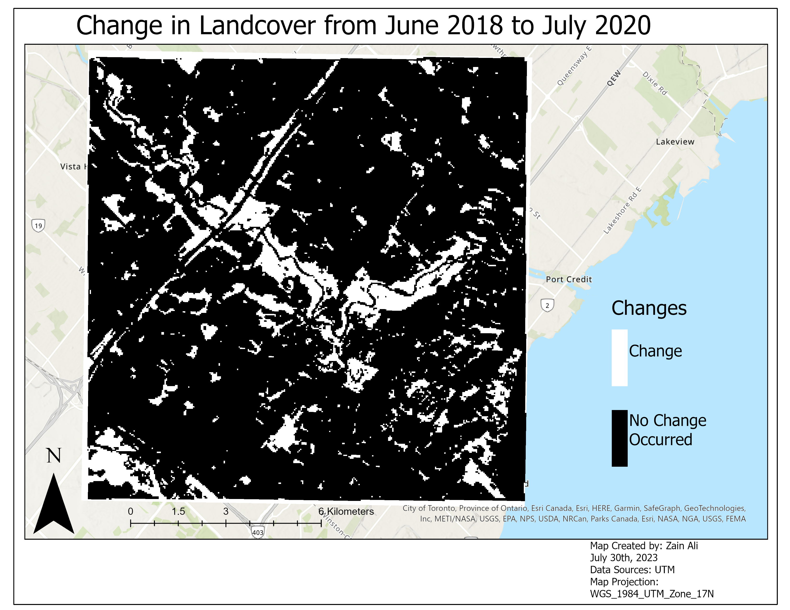

In this project, we collected multiple sports field datasets and utilized ArcGIS Online's Instant App
to calculate the distance and direction from any location to a sports field within the designated area.
Tools Used: ArcGIS Pro, ArcGIS Online: Instant App
In this project we created a transit application in Java for the City of Mississauga
that tracks and calculates fares for anyone who uses a travel card.
Programming Language: Java

In this project, I conducted image registration to align images accurately and classified images through
supervised classification before performing change detection in ERDAS.
This analysis allowed me to identify and assess changes that occurred between two images,
providing valuable insights into the evolving landscape.
Tools Used: ArcGIS Pro, ERDAS Imagine

In this project we analyzed and mapped the unemployment rate in the state of Louisiana in 2017.
Tools Used: ArcGIS Pro

In this project we conducted spatial interpolation and clustering analysis to
identify areas with high/low air pollution levels in New York and
neighboring states, highlighting the impact of urban centers on pollutant concentrations.
Programming Language: R

In Progress